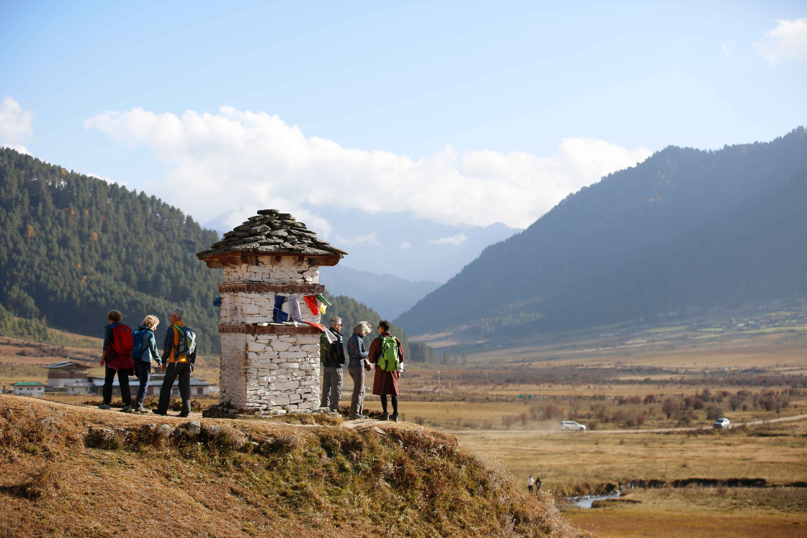

About Us
Discover the story behind GOMO Adventures
Gomo Adventures is a Bhutanese company established in 2008 and licensed by the Tourism Council of Bhutan. The company is named after Bhutan's protecting deity, with its primary office located on Wogzin Lam in Thimphu City, Bhutan.
The founder of Gomo Adventures, Ugyen Wangchuk, initiated his journey as a cultural tour guide in 2002. After six years, he envisioned and actualized his own enterprise, grounded in his values, knowledge, skills, and strengths. The company's name pays homage to the guardian deity of Bhutan.
Beyond his role with Gomo Adventures, Ugyen Wangchuk is an accomplished author and photographer. His publications, such as the Authentic Bhutanese Cookbook and Bhutan Portrait and Landscape, reflect his dedication to portraying his cherished homeland through words and images. His photographic work often serves as inspiration for Bhutanese postcards. He is presently crafting a coffee table book titled The Essence of Bhutan, scheduled for release later this year.
Ugyen Wangchuk is also deeply committed to environmental preservation and ardently supports responsible tourism. A prime example is the development of Bhutan's inaugural eco-friendly lodge (www.bhutanecolodge.com). Currently, he is engaged in establishing Community Based Tourism in the Punakha region, a pivotal stride toward sustainable consumption and production in Bhutan. Ugyen Wangchuk's unwavering dedication to responsible tourism and environmental conservation drives the essence of Gomo Adventures.
The inception of this company is rooted in the founder's firsthand experience as a tour guide. Ugyen Wangchuk's transformation from a cultural tour guide in 2002 to the architect of Gomo Adventures after six years was driven by his values, knowledge, skills, and strengths.
Ugyen's fervor for photography and writing about his cherished homeland is palpable. His literary creations, including the Authentic Bhutanese Cookbook and Bhutan Portrait and Landscape, echo his profound connection to his homeland. His photographic works have also found their way onto numerous postcards across Bhutan. He is presently compiling The Essence of Bhutan, a coffee table book slated for release later this year.
Ugyen Wangchuk, the driving force behind Gomo Adventures, is equally passionate about environmental preservation and fervently advocates for responsible tourism. This commitment is exemplified through the establishment of Bhutan's first eco-friendly lodge (www.bhutanecolodge.com) and his ongoing endeavors in developing Community Based Tourism in the Punakha region—a significant stride towards sustainable practices in Bhutan's consumption and production.

Why Choose Gomo Adventures for Your Travels?
Experienced Global Team
Operated by a seasoned team and a dedicated network of global partners.
Tailored Himalayan Adventures
Designs and guides meticulously customized tours, trekking, and expeditions across Bhutan.
Global Clientele
Orchestrates travel packages for diverse guests from all around the world.
Fully Customizable Itineraries
Offers highly flexible and personalized trips adapted to match precise guest preferences.
Cultural & Scenic Immersion
Delivers intimate experiences that immerse travelers deeply into Bhutan's distinct culture and stunning landscapes.
Specialized Focus Areas
Curates journeys based on specific interests, including photography, cultural exploration, spiritual quests, artistic pursuits, and trekking.
Our Partner & Team